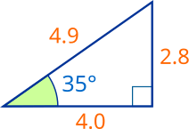
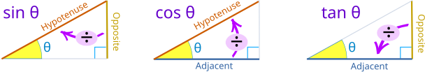
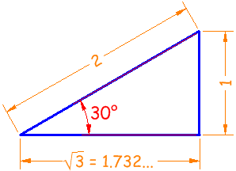
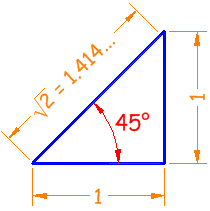

Sine, Cosine and Tangent
Right Triangle
Sine, Cosine and Tangent are the main functions used in Trigonometry and are based on a Right-Angled Triangle.
Before getting stuck into the functions, it helps to give a name to each side of a right triangle:

- "Opposite" is opposite to the angle θ
- "Adjacent" is adjacent to (next to) the angle θ
- "Hypotenuse" is the long one

Opposite is always opposite the angle
And Adjacent is always next to the angle
Sine, Cosine and Tangent
Sine, Cosine and Tangent (often shortened to sin, cos and tan) are each a ratio of sides of a right angled triangle:

For a given angle θ each ratio stays the same
no matter how big or small the triangle is
To calculate them:
Divide the length of one side by another side
Example: What is the sine of 35°?

Using this triangle (lengths are only to one decimal place):
| sin(35°) | = OppositeHypotenuse |
| = 2.84.9 | |
| = 0.57... | |
| cos(35°) | = AdjacentHypotenuse |
| = 4.04.9 | |
| = 0.82... | |
| tan(35°) | = OppositeAdjacent |
| = 2.84.0 | |
| = 0.70... |
Size Does Not Matter
The triangle can be large or small and the ratio of sides stays the same.
Only the angle changes the ratio.
Play with the triangle:
- Drag point A to see how changing the angle affects the ratios
- Drag point B to change the size

Good calculators have sin, cos and tan on them, to make it easy for you. Just put in the angle and press the button.
But you still need to remember what they mean!
In picture form:

Practice Here:
Sohcahtoa
How to remember? Think "Sohcahtoa"!
It works like this:
| Soh... | Sine = Opposite / Hypotenuse |
| ...cah... | Cosine = Adjacent / Hypotenuse |
| ...toa | Tangent = Opposite / Adjacent |
You can read more about sohcahtoa. Remember it, as it may help in an exam !
Angles From 0° to 360°
Move the mouse around to see how different angles (in radians or degrees) affect sine, cosine and tangent.
In this animation the hypotenuse is 1, making the Unit Circle, which is like a map for trigonometry.
Notice that the adjacent side and opposite side can be positive or negative, which makes the sine, cosine and tangent change between positive and negative values also.
| "Why didn't sin and tan go to the party?" "... just cos!" |
Examples
Example: what are the sine, cosine and tangent of 30° ?
The classic 30° triangle has a hypotenuse of length 2, an opposite side of length 1 and an adjacent side of√3:

Now we know the lengths, we can calculate the functions:
| Sine | sin(30°) = 1 / 2 = 0.5 | |
| Cosine | cos(30°) = 1.732 / 2 = 0.866... | |
| Tangent | tan(30°) = 1 / 1.732 = 0.577... |
(get your calculator out and check them!)
Example: what are the sine, cosine and tangent of 45° ?
The classic 45° triangle has two sides of 1 and a hypotenuse of √2:

| Sine | sin(45°) = 1 / 1.414 = 0.707... | |
| Cosine | cos(45°) = 1 / 1.414 = 0.707... | |
| Tangent | tan(45°) = 1 / 1 = 1 |
Why?
With these three magical functions, we're equipped to solve all sorts of real-world questions, because they let us:
- work out angles when we know sides
- work out sides when we know angles

Example: Use the sine function to find "d"
We know:
- The cable makes a 39° angle with the seabed
- The cable has a 30 meter length
And we want to know "d" (the distance down).
The depth "d" is 18.88 m
Exercise
Try this paper-based exercise where you can calculate the sine function for all angles from 0° to 360°, and then graph the result. It will help you to understand these relativelysimple functions.
You can also see Graphs of Sine, Cosine and Tangent.
And play with a spring that makes a sine wave.
Less Common Functions
To complete the picture, there are 3 other functions where we divide one side by another, but they are not so commonly used.
They are equal to 1 divided by cos, 1 divided by sin, and 1 divided by tan:
| Secant Function: | sec(θ) = HypotenuseAdjacent | (=1/cos) | ||
| Cosecant Function: | csc(θ) = HypotenuseOpposite | (=1/sin) | ||
| Cotangent Function: | cot(θ) = AdjacentOpposite | (=1/tan) |